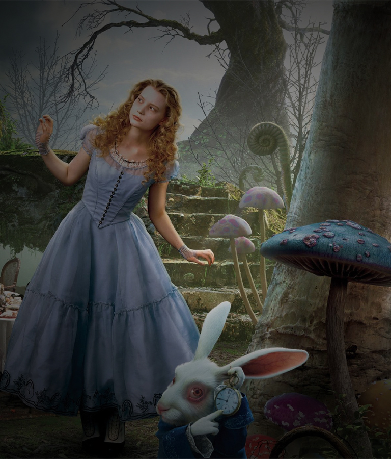
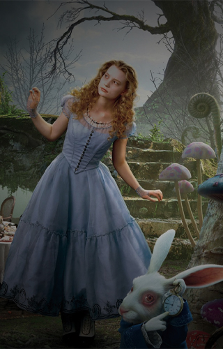
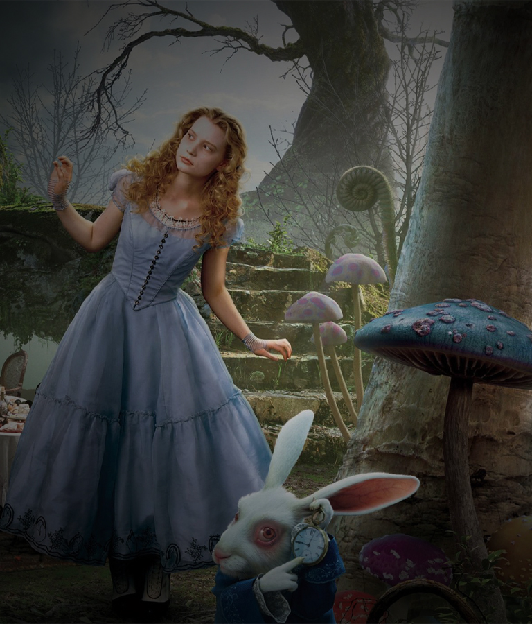
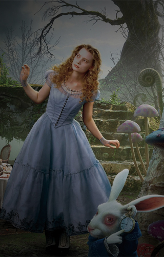
 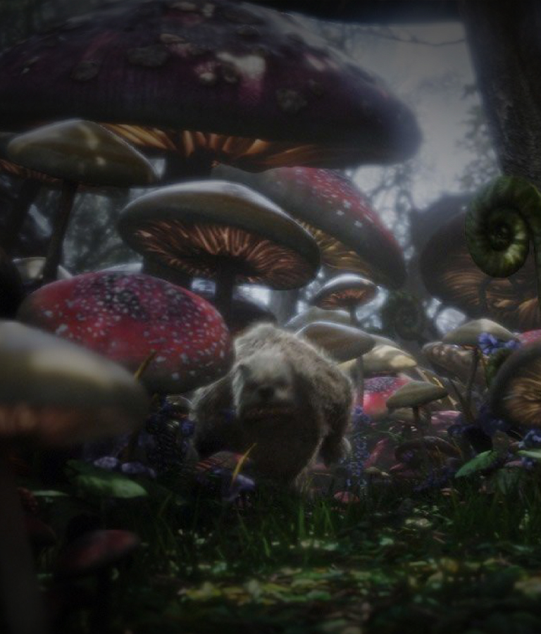
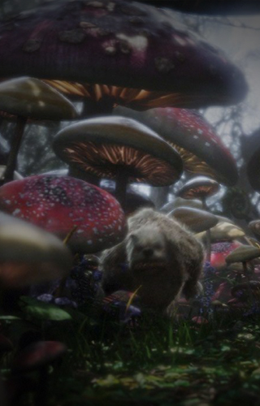
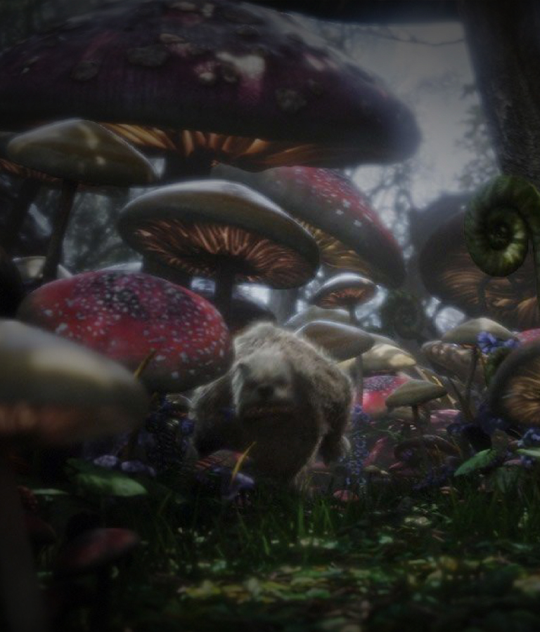
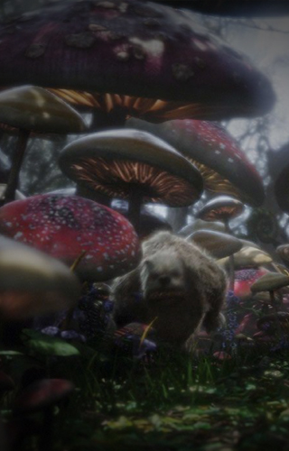
 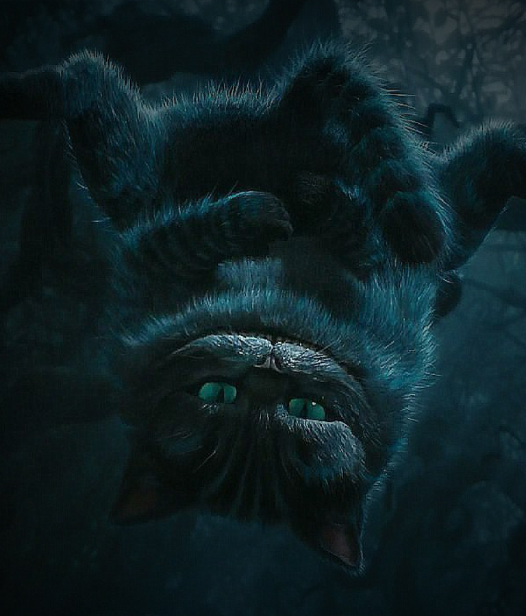
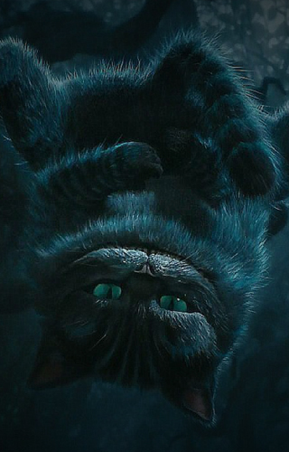
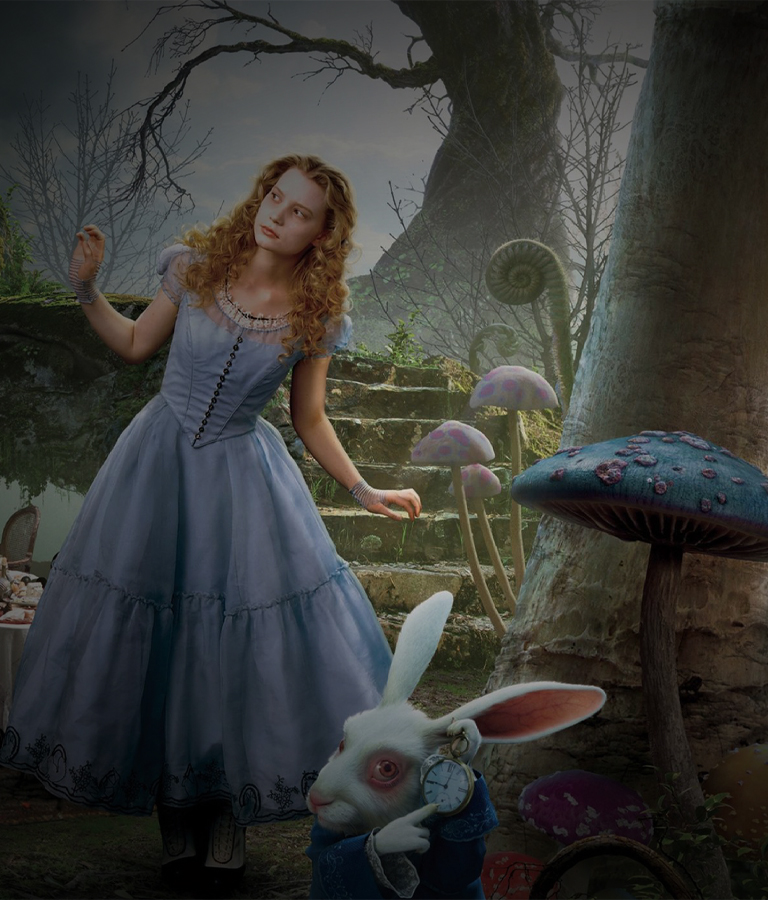
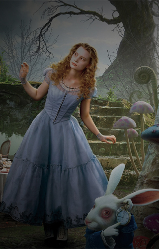
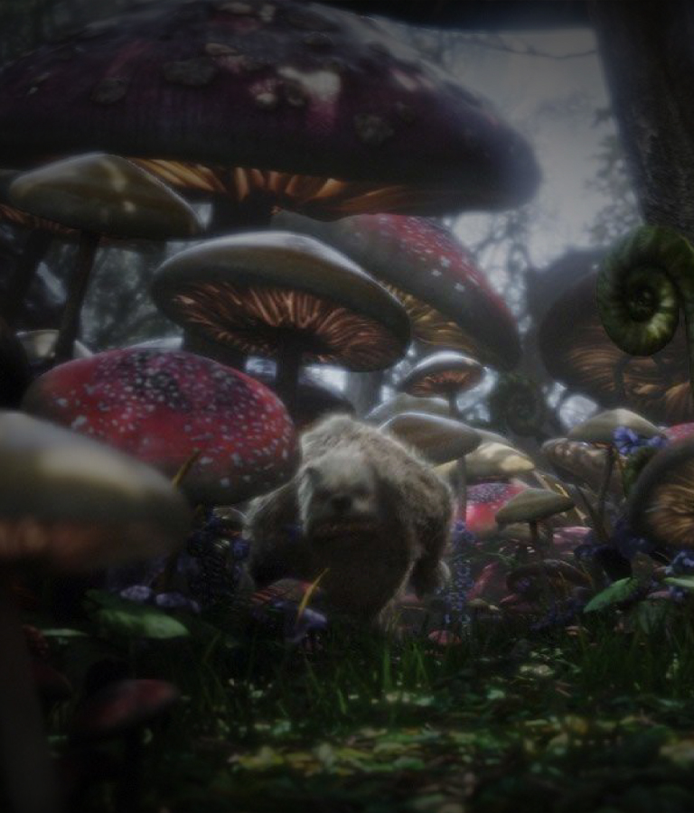
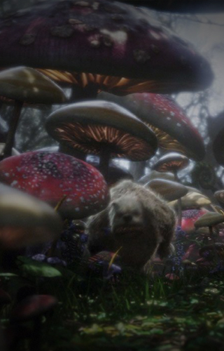
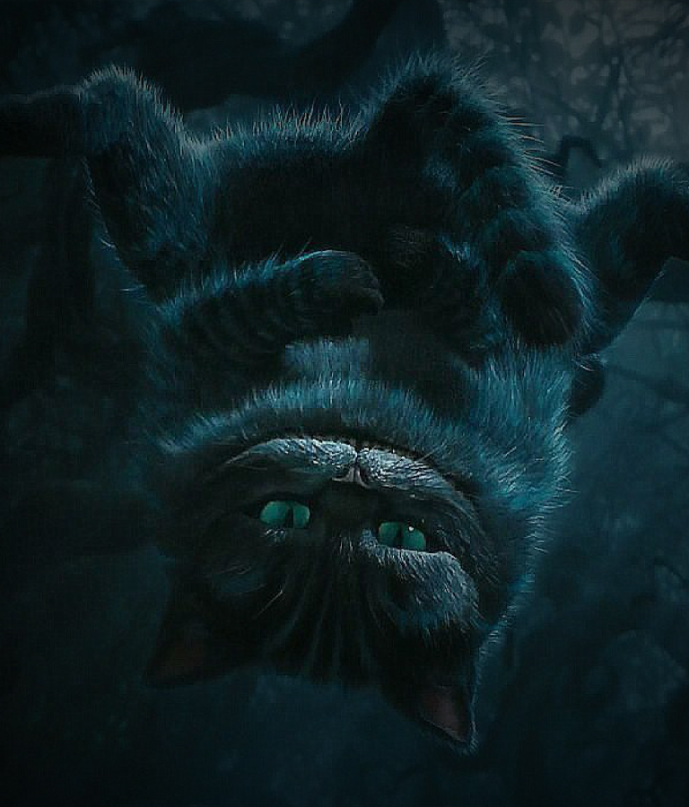
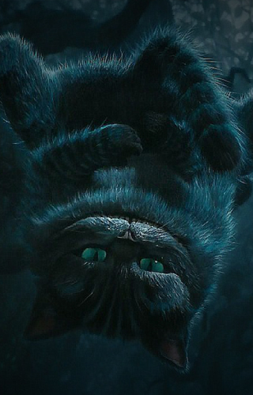
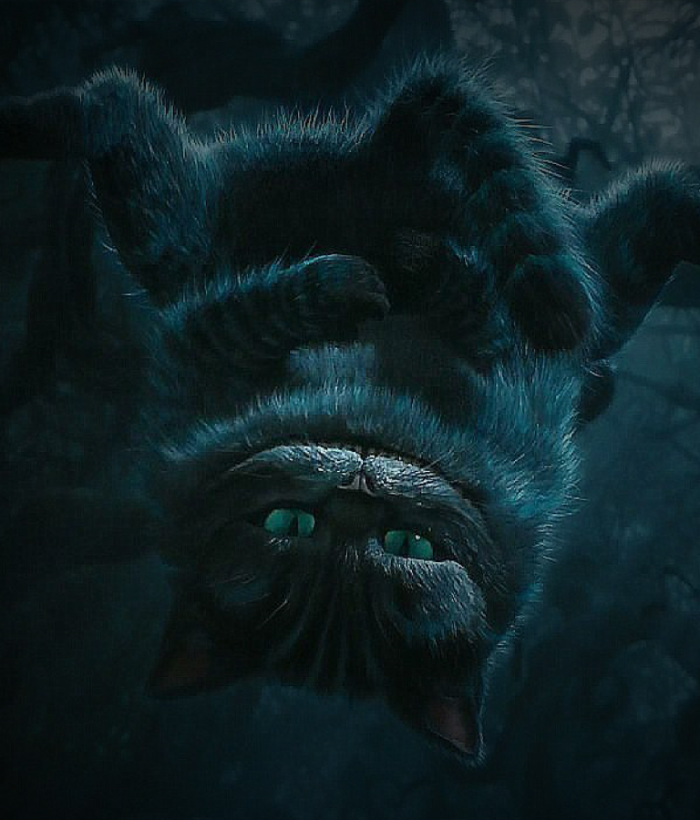
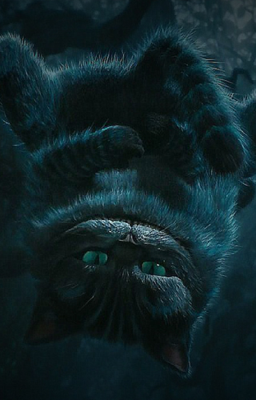
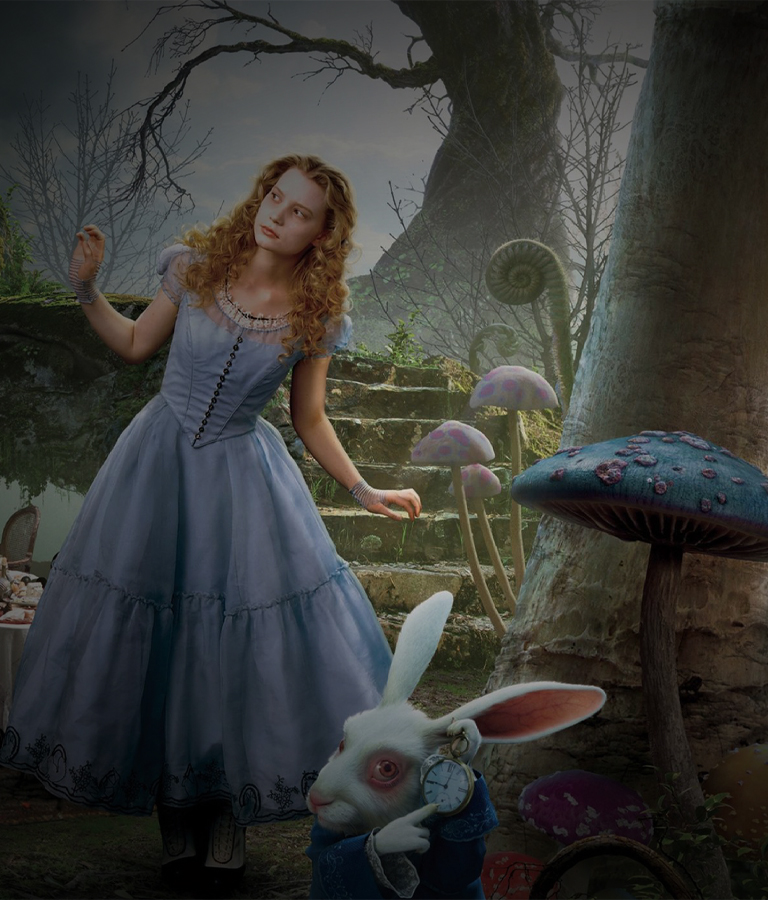
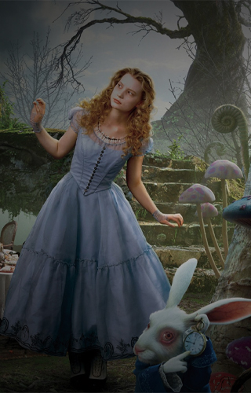
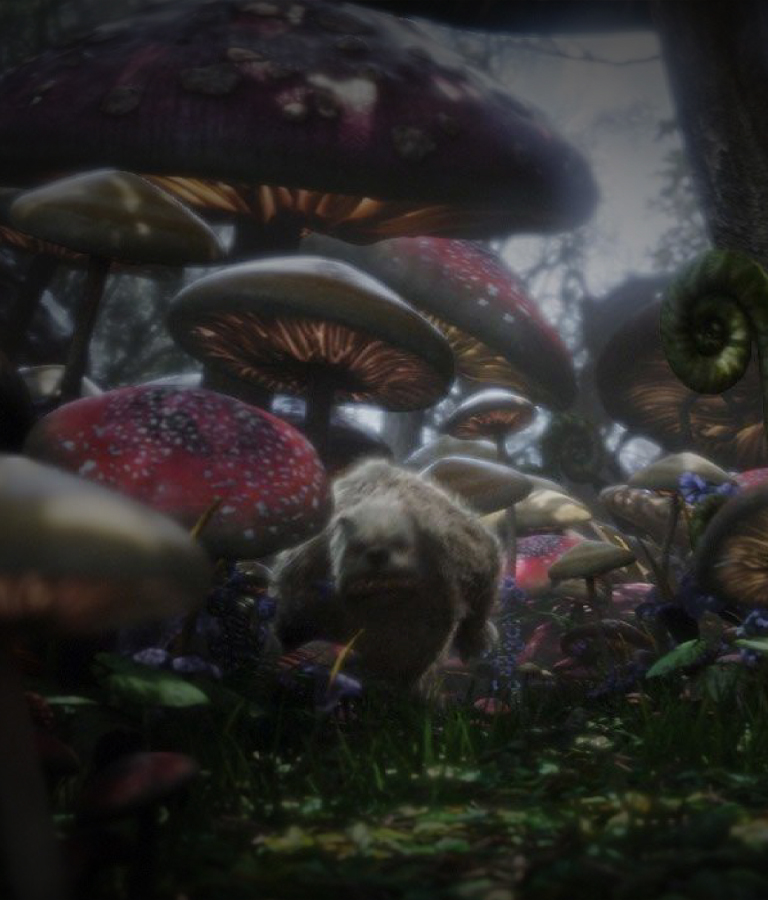
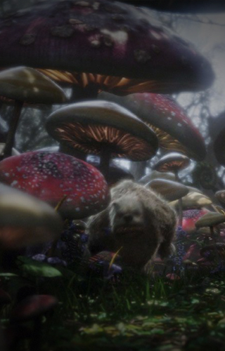
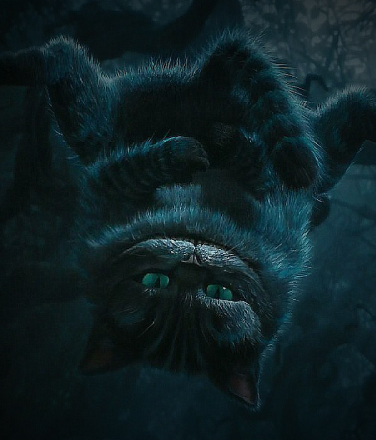
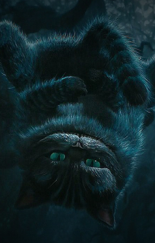

Alice Kingsleigh es una joven de diecinueve años que vive en la Inglaterra victoriana, atrapada entre las expectativas sociales y sus propios sueños. En una fiesta donde un noble intenta pedirle matrimonio, Alice se siente abrumada y huye al bosque. Allí ve a un conejo blanco con un chaleco y un reloj, lo sigue por curiosidad y termina cayendo en un profundo agujero que la lleva a un extraño mundo llamado Infratierra.
En este lugar surrealista, Alice conoce a criaturas tan excéntricas como encantadoras: el Gato de Cheshire, la Liebre de Marzo, el Conejo Blanco y el excéntrico Sombrerero Loco. Aunque todos aseguran que ella es la “verdadera Alice” destinada a cumplir una antigua profecía, la joven no cree pertenecer a ese mundo y piensa que está soñando.
Pronto descubre que Infratierra está oprimida por la temida Reina Roja, una monarca despótica que ha arrebatado el trono a su hermana, la bondadosa Reina Blanca. Su poder se mantiene gracias al Jabberwocky, una criatura monstruosa que todos temen. Alice, aunque al principio duda de su papel, comienza a involucrarse con los habitantes que sueñan con liberar el reino.
El Sombrerero Loco, con su locura y ternura, se convierte en su mayor aliado. A través de él, Alice aprende el valor de la imaginación y el coraje. Cuando la Reina Roja lo captura, Alice comprende que no puede seguir escapando de las decisiones difíciles y acepta su destino.
Llega entonces el Día Frabjous, el momento profetizado en el que Alice debe enfrentarse al Jabberwocky. Con la espada Vorpal en mano y una nueva confianza en sí misma, lucha con valentía y derrota al monstruo. La Reina Blanca recupera el trono y la paz vuelve al reino.
De regreso en el mundo real, Alice ya no es la misma joven insegura que huyó tras un conejo. La experiencia en Infratierra le ha revelado su verdadera fuerza. Ahora está lista para tomar sus propias decisiones y forjar su destino con libertad.
Ver menos
Fijate en los espejos...


Una niña curiosa y soñadora que, al seguir al Conejo Blanco, se adentra en un mundo lleno de personajes extraños y aventuras que desafían la lógica.
Interpretada por: Mia Wasikowska


Divertido y excéntrico, vive en un mundo de caos y organiza eternas meriendas de té donde el tiempo parece detenido.
Interpretado por: Johnny Depp


Un personaje nervioso y apresurado que siempre llega tarde; es quien lleva a Alicia al inicio de su viaje fantástico.
Interpretado por: Michael Sheen


La gobernante tirana del País de las Maravillas, caprichosa y temida por todos por su famoso grito: “¡Que le corten la cabeza!”.
Interpretada por: Helena Bonham Carter


Un felino enigmático y sabio que aparece y desaparece a voluntad, dando a Alicia consejos ambiguos con su sonrisa inquietante.
Interpretado por: Stephen Fry


Bondadosa y pacífica, es la contraparte de la Reina de Corazones. Representa la calma y la justicia, aunque su carácter es algo despistado y excéntrico.
Interpretada por: Anne Hathaway
Podés disfrutar la saga completa de Alice in Wonderland en la plataforma de streaming Disney+. Sumergite en el mundo de Alicia y acompañala en su viaje por Infratierra.
Ver en Disney+
"Me encantó lo visual, los escenarios son súper creativos y los personajes tienen mucha personalidad. La pasé genial viéndola de principio a fin."

"Johnny Depp como Mad Hatter me pareció increíble, le dio un toque único. La peli tiene un aire oscuro y extraño que la hace todavía más interesante."

"No suelo mirar películas de fantasía, pero esta me atrapó. La Reina Roja me dio impresión y la Blanca me pareció tierna. En general, la recomiendo."

"Visualmente es una locura, con colores y efectos muy llamativos al estilo de Tim Burton. La historia a veces es confusa, pero los personajes lo compensan."

"Me voló la cabeza la mezcla de fantasía y oscuridad. El Gato Cheshire es genial, aparece poco pero siempre saca una sonrisa."

"Visualmente es una locura, los colores y efectos son re llamativos, muy al estilo Tim Burton. La historia se entendía medio a medias, pero los personajes la levantan."
Suscribite para enterarte de eventos de fans y dejar tu reseña
Sitio web creado por Tim Burton MOVIES
© TB MOVIES 2025